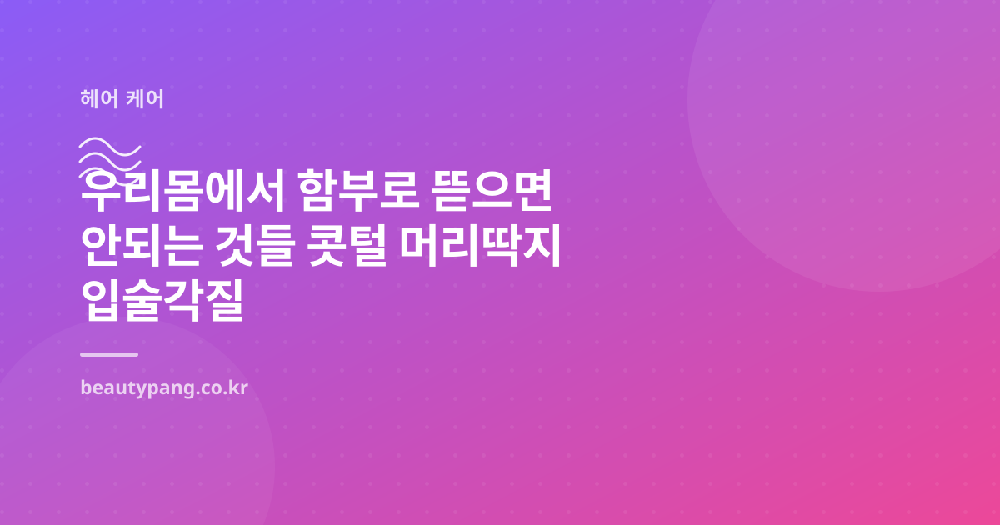

우리가 일상 생활을 하면서 우리몸에서 생기거나 자라나는 것들을 아무런 생각없이 습관처럼 뜯어 내는 것들이 있습니다. 뜯지 않으면 답답하고 불편하고 뜯어내면 시원하고 스트레스가 풀리는 이런 행동이 우리의 건강을 해칠 수 있다는 사실을 아시나요?? 잘못 하면 세균으로 인한 감염확률이 높아지기 때문에 되도록이면 손을 대지 않고 청결하게 유지를 하는 것이 좋습니다. 오늘은 우리몸에서 함부로 뜯으면 안되는 것들에 대하여 한 번 알아보도록 하겠습니다.
건조한 계절이 오면 가장 먼저 방응하는 부위가 바로 입술입니다. 건조한 날씨와 함께 입술도 바싹 마르게 되는데 입술이 건조하면 각질이 생겨 표면이 거칠어지게 됩니다. 피부가 얇다 보니 건조함을 이기지 못하고 갈라지거나 트게 되는 거는데 이때 답답함을 참지 못하고 입술의 각질을 손이나 이로 뜯어내는 사람이 많습니다. 또한 각질을 뜯어낸 후에 임시방편으로 침을 바르기도 하는데 이런 습관은 구순염을 유발할 수 있습니다. 구순염이란 입술과 얼굴 피부의 경계 부위에 발생하며 각종 자극에 의해 염증이 발생하는 질환을 말합니다. 구순염은 입술에 침을 바르는 습관에 의해 생길 수 있는데 증상이 가볍다고 방치하면 편평세포암으로 발전할 수 있어 주의가 필요합니다. 그리고 입술의 각질을 뜯는 행위는 오히려 각질을 더 두껍게 만들기 때문에 각질이 생겼다면 저절로 떨어질 때까지 건드리지 않거나 보습제를 충분히 발라서 촉촉하게 관리하면 각질 제거에 큰 도움이 될 수 있습니다.
손톱과 살 사이에 뾰족하게 일어나는 거스러미는 별거 아닌 것 같아도 굉장히 신경 쓰입니다. 보기에도 지저분하고 손을 움직일 때마다 거슬리니 손으로 뜯어내고 싶어지지만 거스러미를 함부로 손으로 뜯었다가는 감염이나 염증으로 이어질 수 있습니다. 거스러미가 일어난 부위보다 더 넓은 부위의 살이 뜯기기 때문인데 이 틈으로 균이 들어갈 가능성이 커집니다. 거스러미는 반드시 손톱깎이로 잘라내고 자른 후에는 소독하는 것이 좋습니다.
가끔 거울을 보면 길게 삐져 나와 있는 코털로 코가 간질 간질 한 것을 느껴보신 경험이 많으실겁니다. 이 때 손으로 잡히면 눈물나는 아픔을 감수하고 억지로 뜯어 내는 경우가 생기는데 이런 경우 세균성 염증을 유발하고 뇌막염, 패혈증까지도 이어질 수 있습니다. 코털의 경우에는 가위로 자르기도 민감한 부분이기 때문에 코털 전용 제거기를 이용하여 자르는 것이 가장 안전하고 좋은 방법입니다.
상처가 생겨서 피가 나면 피를 멈추게 하기 위해 상처 부위에 혈소판이 모여듭니다. 혈소판에 의해 피가 멎고 나면 피부 표면에 빨갛고 딱딱한 딱지가 생기는데 이는 우리 몸에 세균이 들어오지 않게 보호해 줍니다. 그런데 답답하거나 혹은 떼면 빨리 상처가 아물 것 같다는 생각으로 참지 못하고 제거하는 사람이 있습니다. 그렇지만 딱지를 떼는 과정에서 손의 세균이 상처에 들어갈 수도 있고 고통이 생기기 때문에 스스로 아물 때까지 두는 것이 좋습니다. 하지만 만약 고름이 나온다면 딱지를 제거해주는 것이 좋으며 딱지가 오래갈수록 피부의 재생이 느려지기 때문에 흉터가 생길 확률이 높아집니다. 그래서 딱지가 생기지 않게 사전에 관리하는 것이 좋습니다. 만약 상처가 생기면 이물질을 제거한 후에 습윤 드레싱을 통하여 상처를 관리하는 것이 좋습니다.
두피가 건조해지면 딱지가 일어날 수 있는데 이는 나도 모르게 머리를 긁었거나 뾰루지가 났다가 가라앉으면서 생기는 것들입니다. 이때 딱지를 무턱대고 손톱으로 긁어내면 지루성 두피염이 생길 수 있습니다. 잘못하면 딱지가 앉았던 자리의 피부가 손상되면서 그 자리에 탈모까지 유발할 수 있으니 딱지가 자연스럽게 떨어지도록 두는 것이 좋습니다.
여성분들이 특히 소독없이 오염된 족집게로 겨드랑이 털을 뽑는 경우가 종종 있는데 이렇게 함부로 뽑다가 모낭염이 생길수 있습니다. 붓고 통증이 나타나며 겨드랑이는 습하기 때문에 잘 낫지도 않습니다. 염증이 낫기도 전에 또 다시 겨드랑이 제모를 하고 이걸 반복하다 보면 거뭇거뭇 겨드랑이 색소침착이 일어날 수 있다고 합니다.
굳은살이 가장 많이 생기는 부분인 발뒤꿈치는 미용상의 이유 혹은 불편함 때문에 손톱으로 뜯어내거나 거친 사포로 갈아내는 경우가 많습니다. 주로 목욕하며 뜨거운 물로 불리고 각질을 제거하는 데 이러한 방법은 살아있는 세포가 함께 떨어져 나올 수 있습니다. 그리고 발 각질은 뜯을수록 더 두꺼워지기 때문에 억지로 강하게 제거하기보다는 각질 제거제를 이용해 부드럽게 관리하고 씻은 후에는 발에 충분한 수분을 보충해 주는 것이 좋습니다.
함께 보면 좋은 계산기